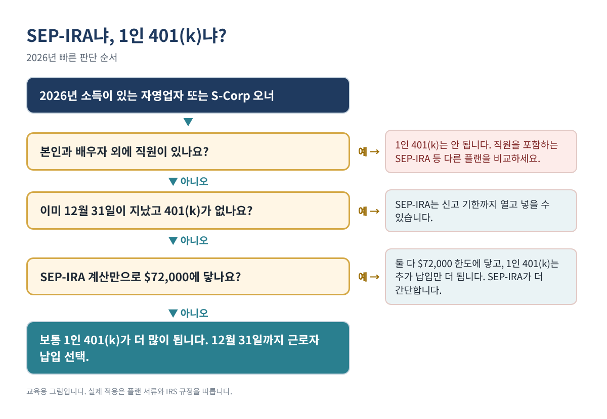
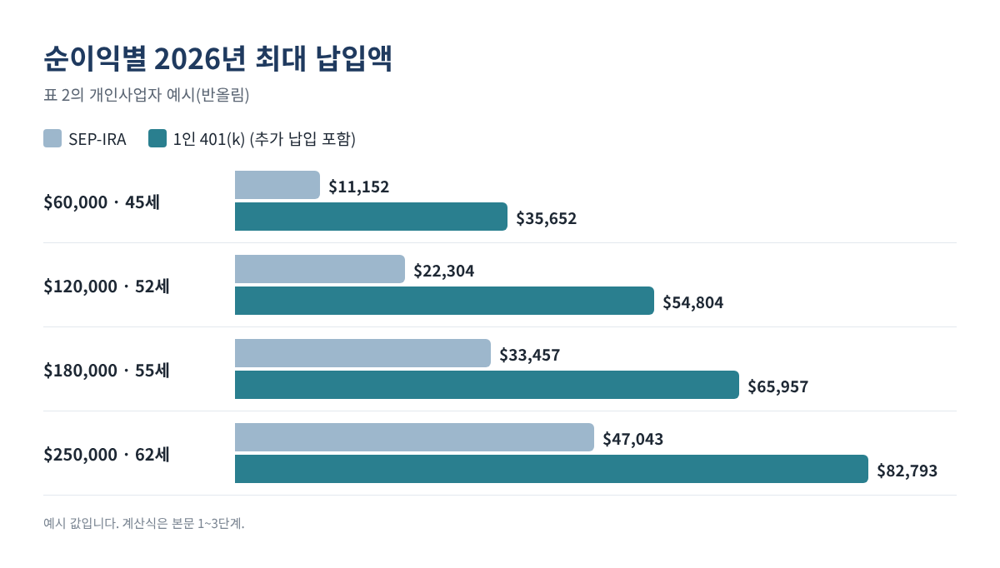
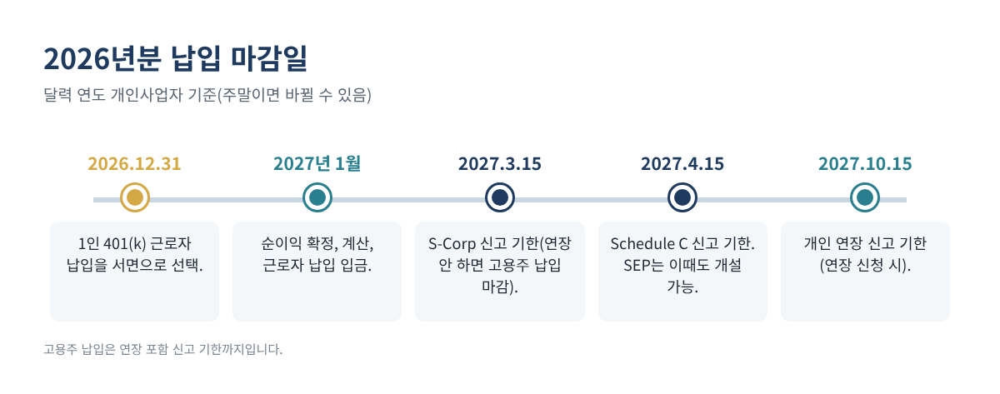

2026년 1인 401(k)와 SEP-IRA, 어느 쪽이 더 넣을 수 있을까? 최대 납입액 직접 계산하기
직원 없이 혼자 사업하시는 분이라면 연말마다 두 가지 은퇴 플랜 이야기를 듣게 됩니다. SEP-IRA와 1인 401(k)(Solo 401(k), one-participant 401(k))입니다. 둘 다 일반 IRA보다 훨씬 많이 넣을 수 있고 과세 소득도 줄여 줍니다. 하지만 같은 순이익이라도 넣을 수 있는 금액이 크게 다르고, 1인 401(k)에는 12월 31일까지 해야 하는 절차가 있어 놓치기 쉽습니다.
이 글에서는 2026년 한도, 두 플랜의 계산 공식, 계산기로 직접 확인할 수 있는 예시, 마감일을 정리합니다. 엑셀로 따라 하면 15분 정도면 됩니다.
이런 분께 필요합니다: Schedule C로 신고하는 개인사업자·1인 LLC 오너, 프리랜서·계약직, W-2 급여를 받는 S-Corp 오너 중 배우자 외 직원이 없는 분.
2026년에 알아야 할 숫자
아래 수치는 IRS의 2026년 물가 조정표와 보도자료에서 확인했습니다(출처는 글 끝에).
| 2026년 한도 | 금액 | 적용 |
|---|---|---|
| 근로자 납입(elective deferral) | $24,500 | 1인 401(k) |
| 추가 납입, 50세 이상 | $8,000 | 1인 401(k) |
| 추가 납입, 60~63세 | $11,250 ($8,000 대신) | 1인 401(k) |
| 연간 총 납입 한도(추가 납입 제외) | $72,000 | 두 플랜 |
| 반영 가능한 최대 소득 | $360,000 | 두 플랜 |
| 사회보장세 과세 한도 | $184,500 | 자영업세 계산 |
표 1. 이 글에서 쓰는 2026년 IRS 한도.
핵심 차이는 이렇습니다. SEP-IRA는 소득의 일정 비율인 "고용주 납입"만 됩니다. 1인 401(k)는 같은 고용주 납입에 더해 최대 $24,500의 "근로자 납입(deferral)"과 50세 이상 추가 납입(catch-up)까지 됩니다. 그래서 순이익이 중간 정도일 때 1인 401(k)가 훨씬 많이 넣을 수 있습니다.

1단계. 플랜 기준 소득 구하기 (개인사업자·1인 LLC)
자영업자의 기준 소득은 자영업 순소득에서 자영업세(SE tax)의 절반과 본인 납입액을 뺀 금액입니다. 실제로는 세 줄이면 계산됩니다. B2에 Schedule C 순이익을 넣으세요.
B3 자영업세: =MIN(B2*0.9235, 184500)*0.124 + B2*0.9235*0.029 B4 자영업세 절반: =B3/2 B5 플랜 기준 금액: =B2 - B4
0.9235와 12.4%·2.9%는 Schedule SE의 계산 방식이고, 사회보장세 부분은 2026년 한도 $184,500에서 멈춥니다. (다른 직장의 W-2 급여가 있으면 한도를 일부 쓰게 되는데, 이 간단한 식에는 반영하지 않았습니다.)
2단계. 고용주 납입 계산 (두 플랜 공통)
플랜 비율은 25%지만, 자영업자는 기준 소득 자체가 납입액만큼 줄어들기 때문에 실제 비율은 25% ÷ 125% = 1단계 금액의 20%가 됩니다. IRS Publication 560의 자영업자용 비율표와 워크시트로 숫자를 한 번 더 확인하세요.
B6 고용주 납입(SEP 최대): =MIN(B5*0.20, 72000)
S-Corp 오너는 더 간단합니다. 고용주 납입은 플랜이 정한 W-2 급여(보통 본인 근로자 납입 포함)의 25%이고, 분배금(distribution)은 포함되지 않습니다.
3단계. 근로자 납입과 추가 납입 더하기 (1인 401(k)만)
B7 2026년 12월 31일 기준 나이: (직접 입력) B8 근로자 납입: =MIN(24500, B5) B9 추가 납입: =IF(AND(B7>=60, B7<=63), 11250, IF(B7>=50, 8000, 0)) B10 1인 401(k) 최대: =MIN(B6 + B8, 72000, B5) + B9
고용주 납입과 근로자 납입을 합친 금액은 $72,000과 기준 소득의 100%를 넘을 수 없고, 추가 납입은 그 한도 위에 더해집니다.
계산 예시
| 예시(설명용) | 자영업세 | 기준 금액 | SEP-IRA 최대 | 1인 401(k) 최대 |
|---|---|---|---|---|
| 순이익 $60,000, 45세 | $8,478 | $55,761 | $11,152 | $35,652 |
| 순이익 $120,000, 52세 | $16,955 | $111,522 | $22,304 | $54,804 |
| 순이익 $180,000, 55세 | $25,433 | $167,283 | $33,457 | $65,957 |
| 순이익 $250,000, 62세 | $29,573 | $235,213 | $47,043 | $82,793 |
표 2. 위 수식으로 계산한 개인사업자 예시(반올림). 예시일 뿐이며 결과는 본인 숫자에 따라 달라집니다.
두 번째 줄을 보세요. 52세, 순이익 $120,000이면 SEP-IRA는 약 $22,304가 최대지만 1인 401(k)는 약 $54,804까지 됩니다. 차이 $32,500은 근로자 납입 $24,500과 추가 납입 $8,000입니다. 순이익이 아주 높아지면 두 플랜 모두 $72,000 한도에 닿아 차이가 줄어듭니다.

61세 S-Corp 오너가 W-2 급여 $100,000을 받는 경우, SEP-IRA 최대는 $25,000(급여의 25%), 1인 401(k) 최대는 $25,000 + $24,500 + $11,250 = $60,750입니다.
세금은 얼마나 줄까
전통(세전) 납입은 소득세를 줄여 주지만 자영업세는 줄여 주지 않습니다. 대략 "납입액 × 최고 연방 세율"로 보면 됩니다. 22% 구간에서 $10,000을 넣으면 연방 소득세가 약 $2,200 줄고, 주 소득세도 있다면 그만큼 더 줄어듭니다. Roth 납입은 지금 세금은 그대로지만 나중에 비과세로 불어나며, 많은 1인 401(k)가 근로자 납입에 Roth 옵션을 둡니다.
4단계. 마감일 챙기기

- 2026년 12월 31일: 이미 1인 401(k)가 있다면 2026년 근로자 납입을 연말까지 선택(election)해야 합니다. 서면으로 남겨 플랜 서류와 함께 보관하세요. 실제 입금은 신고 기한까지 나중에 해도 됩니다.
- 세금 신고 기한(연장 포함): 두 플랜 모두 고용주 납입 마감입니다. SEP-IRA는 이때까지 2026년분 계좌를 새로 열 수도 있어서, 12월을 놓쳤을 때의 대안이 됩니다.
- 연말 이후: 최근 법 개정으로 직원 없는 개인사업자는 경우에 따라 연말 이후에도 새 401(k)를 만들 수 있습니다. 다만 첫해 근로자 납입 규정은 까다로우니 플랜 회사에 먼저 확인하세요.
- Form 5500-EZ: 1인 플랜은 연말 자산이 $250,000 이상이 되면 일반적으로 신고해야 합니다. 마감일은 Form 5500-EZ 안내문에서 확인하세요.
| SEP-IRA | 1인 401(k) | |
|---|---|---|
| 가입 대상 | 모든 사업체, 자격 있는 직원 포함 필요 | 다른 직원 없는 오너(와 배우자) |
| 근로자 납입 | 없음 | 최대 $24,500 + 추가 납입 |
| Roth 옵션 | 금융회사에 따라 다름 | 근로자 납입에 흔히 있음 |
| 2026년분 개설 마감 | 신고 기한(연장 포함) | 12월 31일 선택을 하려면 플랜이 이미 있어야 함 |
| 연간 신고 | 오너 본인은 없음 | 자산 $250,000 이상이면 Form 5500-EZ |
표 3. 한눈에 비교.
자주 하는 실수
- 개인사업자가 순이익의 25%를 그대로 쓰는 것. 실제 비율은 자영업세 절반을 뺀 금액의 약 20%입니다. 25%로 계산하면 초과 납입이 됩니다.
- 12월 31일 근로자 납입 선택을 놓치는 것. 선택이 없으면 기존 1인 401(k)도 2026년에는 SEP처럼 고용주 납입만 됩니다.
- 직원이 있는 경우. 1인 401(k)는 다른 직원이 없는 오너(와 배우자)만 쓸 수 있습니다. SEP-IRA는 자격 있는 직원에게도 같은 비율로 넣어야 합니다.
- S-Corp 분배금을 소득에 넣는 것. S-Corp 오너는 W-2 급여만 기준이 됩니다.
- 두 플랜에서 한도를 각각 다 쓰는 것. $24,500 근로자 납입 한도는 직장 401(k)·403(b)를 포함해 사람 기준으로 하나입니다.
- 고소득자 Roth 추가 납입 규정을 모르는 것. SECURE 2.0에 따라 일정 소득 이상 근로자의 추가 납입은 Roth로 해야 하고, IRS 최종 규정은 대체로 2027년부터 적용됩니다. W-2 급여가 높은 S-Corp 오너는 플랜 회사에 적용 여부를 물어보세요.
자주 묻는 질문
SEP-IRA와 1인 401(k)를 둘 다 가질 수 있나요?
가능은 하지만 고용주 납입 한도를 함께 쓰고, 일부 401(k) 표준 서류는 이를 제한합니다. 1인 사업자는 보통 하나만 고릅니다.
배우자가 사업을 같이 하면 달라지나요?
사업에서 실제로 일하는 배우자는 보통 1인 401(k)에 함께 가입해 본인 소득을 기준으로 근로자 납입과 고용주 납입을 할 수 있어, 가정 전체 한도가 거의 두 배가 될 수 있습니다.
직장 401(k)도 있는데 1인 401(k)를 쓸 수 있나요?
네. 다만 $24,500 근로자 납입 한도는 두 플랜이 나눠 씁니다. 사업체의 고용주 납입은 별도이며 플랜당 $72,000 한도에 들어갑니다.
이 납입으로 자영업세도 줄어드나요?
아니요. 개인사업자 본인 납입 공제는 소득세만 줄여 줍니다. 자영업세는 그 전에 계산됩니다.
SEP-IRA가 더 나은 경우도 있나요?
SEP-IRA는 간단합니다. IRS 표준 양식 외에 플랜 서류가 거의 없고, Form 5500-EZ도 없으며, 12월 31일 이후에도 열 수 있습니다. 순이익이 높아 두 플랜 모두 $72,000에 닿거나 12월 선택을 놓쳤다면 현실적인 선택이 될 수 있습니다.
체크리스트
- ☐ 2026년 순이익(또는 S-Corp W-2 급여) 추정
- ☐ 자영업세 절반 차감, 고용주 비율 20% 적용(개인사업자)
- ☐ 1인 401(k)는 근로자 납입과 추가 납입 더하기
- ☐ 2026년 12월 31일까지 근로자 납입 서면 선택(기존 1인 401(k))
- ☐ 신고 기한(연장 포함)까지 고용주 납입 입금
- ☐ $72,000 한도와 직장 401(k) 납입액 확인
- ☐ Form 5500-EZ 대상인지 확인(자산 $250,000 이상)
직접 만들기 번거로우시다면, 완성된 Solo 401(k) vs SEP-IRA Calculator 2026 엑셀(영문판·영한판)을 Etsy와 Gumroad 매장에서 구하실 수 있습니다.
이 글은 교육용 정보이며 세무·법률·투자 자문이 아니고, 어떤 결과도 보장하지 않습니다. 실제 적용은 플랜 서류와 최신 IRS 규정을 따르니, 납입 전에 확인하시거나 전문가와 상의하세요.
출처
- IRS: COLA increases for dollar limitations on benefits and contributions
- IRS newsroom: 401(k) limit increases to $24,500 for 2026, IRA limit increases to $7,500
- IRS: One-participant 401(k) plans
- IRS Publication 560, Retirement Plans for Small Business
- IRS newsroom: Final regulations on the Roth catch-up rule (IR-2025-91)
- IRS Topic No. 751, Social Security and Medicare withholding rates